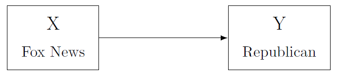
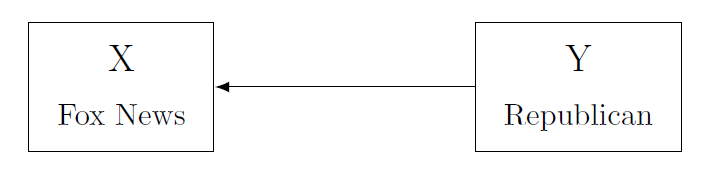
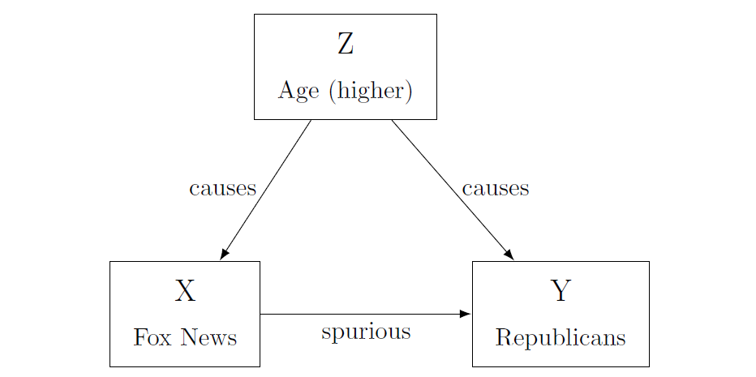

2 Causal Inference and the Scientific Method
By Pilar Manzi and Maximilian Weylandt
2.1 Introduction/Background
Social scientists, like other scientists, do a variety of work. Some are doing research that primarily aims to describe a situation. For example, Pan and Xu (J. Pan and Xu 2018) use a large online survey to present the first macro-overview of ideological preferences among Chinese citizens. They find that people who prefer authoritarian rule also tend to support the state intervening in the economy, while people who favor democratic reforms support market reforms at higher rates. They don’t try to explain why this is so, but just present the state of things as they have found them. Others go beyond description and try to establish cause-effect relationships. De la O (De La O 2013) uses experimental data from the Mexican Conditional Cash Transfer to estimate how the transfers affect beneficiaries’ electoral participation and party choice. She finds that early enrollment in the program caused an increase in voter turnout and in support for the incumbent party. No matter what the research goal is, all of these different types of work follow the scientific method. Following this method is what makes us political scientists and not political commentators. The method guides us through our research process, offering a framework for answering questions through empirical data. It carries us from our initial research puzzle all the way to our conclusions.
While all research requires careful and thoughtful work, this chapter will focus more on what’s involved in investigating causal processes. Causal claims have been a part of the field since its origins. One of the old debates in comparative politics, for example, concerns whether a country’s growing wealth results in more democracy. There have been numerous attempts at establishing a causal relationship between these two factors, yet most have been followed by valid criticisms that cast doubt on the authors’ conclusions. These debates have been centered around: how to determine if development causes democracy or if democracy causes development; what level of development is necessary for democracy; how to explain the presence of developed countries that are authoritarian, among others. These perennial discussions have led some authors, such as (Seawright 2010), to argue that it is futile to attempt establishing causality among development and democracy, at least with large cross national datasets.
Despite the challenge of making causal claims, it is a goal pursued by many researchers because it offers the strongest means of evaluating and testing a theory. In recent years, quantitative scholars especially have begun using increasingly sophisticated methodologies (influenced by a similar movement among economists) to establish causality. As you’ll read in chapter ch07, experimental political science introduced the ability to see cause-effect relationships among subjects with a much greater degree of confidence than before. Yet scholars have also advanced on the casual path with data that does not come from experiments. In short, the quantitative methods for causal inference have expanded tremendously in complexity and power. In the end, there is no magical statistical procedure that can show causality; each problem requires the application of careful thought.
This chapter will introduce you to terms that are crucial in thinking about causality, such as omitted and confounding variables, reverse causality, and spuriousness. It will provide you with a key set of questions that you should ask yourself when considering a potential causal relationship. Above all, we want to stress that causality cannot be shown easily. This is especially true in political science: the concepts we deal with are contested in their definitions, the way we measure concepts is prone to error, and the subjects of our research are, at the end of the day, humans. Showing causality is difficult but important work that requires careful consideration of the relationships among variables.
We’ll begin by discussing the scientific method, which may already be familiar to some of you. Next, we’ll discuss some hurdles to good description, before going into more detail on establishing cause-effect relationships, or what’s called “causal inference."
2.2 Setup: The scientific Method
If you have taken a science class before, you may have seen a diagram or flowchart that describes the scientific method, or the scientific process. There is no one canonical description, but the scientific method is generally held to include a few parts.
We start with a puzzle about the real world. Our aim is often to explain something interesting- perhaps an anomalous case that is not explained by existing literature or a new phenomenon that needs explaining. But first, be aware of the type of puzzle or question you are elaborating. Normative questions, on the one hand, regard ethical or moral concerns; they are about what should and what ought be. Positive questions, on the other hand, are not about what is right or wrong, but simply about why and how things occur the way they do. This textbook focuses on how to investigate positive questions. You should try striking a good balance on the scope of your question: you want your puzzle to be specific enough to be answerable, yet no too detailed so as to only speak to a tiny part of the literature.
Let’s say we are interested in understanding who supported left-wing populist Evo Morales in Bolivia.Note that this question is not about what should be driving peoples’ vote, but about understanding what is driving it. The question speaks to a broader literature on voting behavior and populism, yet at the same time is restricted to a specific context and is clear enough so as to be answerable. Another important thing to keep in mind is how the question is worded. Not all puzzles and research questions are about causality. In this case, for instance, the question is more descriptive in nature. If we were to ask what causes people to vote for a certain candidate, then we would need to make sure that our method and our findings actually allow us to make causal claims. As you will learn later, most often than not this is not the case.
Then, we come up with a theory that explains our puzzle.
Often, you will encounter several theories that could explain your puzzle. Among some of the theories on voting behavior there are those that emphasize ideological linkages, party attachments, or candidate image. Yet another group of scholars focus on class cleavages or economic interests. This literature broadly states that voters should support candidates whose programs will benefit them economically. If you research a puzzle you will familiarize yourself with arguments from the whole field, though in practice, scholars tend to focus on one theory.This theory usually has (a) hypothesis/hypotheses and implications.
If economic considerations drive the vote, we should see this in the data: poor and wealthy voters’ choices should differ. More specifically, lower-income Bolivians should be more likely to vote for Evo Morales, whose core promises included implementing social grants and extending social services. Wealthy business-owners, on the other hand, might have been more inclined in voting against him in fear of being heavily taxed or having their business expropriated. As with the case of formulating questions, the formulation of hypotheses should correspond to the tools you have available to test them. If you do not have experimental data, you should be wary about hypothesizing that low- economic status causes voters to support Evo Morales.These implications can be tested against evidence. The evidence might have already been created, or we might create the evidence ourselves. For instance, we could take advantage of existing surveys and analyze that data with a regression. Alternatively, we could implement our own exit poll in the next elections and test our hypothesis on this database.
Finally, after testing our hypotheses, we can can make conclusions about our research. If our results show that low-income citizens voted for Evo Morales at higher rates that business-owners, then this could indicate support for our hypothesis. If not, we could turn to a different theory on voting behavior and come up with observable implications and hypotheses, and then test them with the data. Note how this loops around to the beginning of the process: the evidence we have here informs further engagement with theory, and so on. As mentioned in the above steps, the implications we can derive are conditioned on the type of evidence and type of tests we can perform. Unfortunately, We cannot make causal implications when our method purely allows for descriptive statistics. In short, there needs to be an overall fit between our research question, our hypotheses, our tests and the conclusions we extract from them.
While some articles and books do all of the things listed above, these steps do not all have to be followed in the same project for it to be scientifically sound. Science is a collaborative enterprise, and sometimes research progresses from the efforts of several scholars put together. One article could simply provide a new set of data, for example, that either challenges conventional wisdom or describes a situation for the first time. Let’s say we run the exit survey after the Bolivian election, and publish an article that describes the demographic characteristics of different voters and who they voted for. Others can then start using that data in their research and test different theories against the available data. As mentioned, there are often competing arguments explaining the same observations. Some scholars argue that voters are voting based on which party they expect will deliver them more economic benefits in the future (theory 1), others that voters reward parties for how well they have treated them in the past (theory 2), and yet others claim vote choice is inherited and taught within families (theory 3). Survey questions could probe whether voters expect to gain from the new administration (theory 1), or how they have fared under different parties in the past (theory 2). In-depth interviews or ethnographic research could show that voters feel a deep connection with parties that goes back to their childhoods (theory 3).
Exploration or Cheating?
The process explained above is somewhat abstract, and often not followed exactly in practice. When a researcher gets new data, it is tempting to immediately have a look at it and see what connections one can find. If done right, this is inductive research: a deep engagement with the data leads us to new hypotheses about the world. This is often contrasted with deductive research, where we have theories and test them against data. (See also ch03’s discussion on theory-building versus theory testing).
Some people (often people working with large-n data) are strong proponents of the latter approach. They argue that you should not come up with theories after the fact to fit the patterns in your data. This is because starting with the data can lead to misconduct. A famous recent example of this happened with Cornell Professor Brian Wansink, who published dozens of headline-grabbing studies on nutrition. A closer look revealed that he used a variety of questionable research practices. See how a Buzzfeed investigation reports on emails from his lab:
First, he wrote, she should break up the diners into all kinds of groups: “males, females, lunch goers, dinner goers, people sitting alone, people eating with groups of 2, people eating in groups of 2+, people who order alcohol, people who order soft drinks, people who sit close to buffet, people who sit far away, and so on...”
Then she should dig for statistical relationships between those groups and the rest of the data: “# pieces of pizza, # trips, fill level of plate, did they get dessert, did they order a drink, and so on...” (Lee 2018).
What they did is sometimes called p-hacking: manipulating the data until one gets a p-value that indicates a statistically significant result (you’ll learn about p-values in chapter ch5. Wansink was explicit about manipulating these values, writing to a colleague: “If you can get the data, and it needs some tweeking, it would be good to get that one value below .05”(Lee 2018).
There are a number of ways the research process can be compromised. On one end there is outright fraud, like the case of Michael LaCour, who outright fabricated data on an experiment he supposedly ran. (The authors who found it are Broockman, Kalla, and Aronow (2015), but a more accessibly summary can be found at fivethirtyeight or This American Life). On the other hand, research may be compromised by researchers selecting the one statistical procedure that shows results among many others that do not. This can happen subconsciously as well! Research almost never involves a clear way forward, and so there will always be the temptation to look at the evidence in a different way – until suddenly we get the results we thought we would get.
There is a bit of a divide between qualitative/small-n and quantitative/large-n scholars on this issue. The former often caution against starting with the data, while the latter consider it essential. A qualitative scholar might argue that you cannot come up with good hypotheses without knowing a good deal about the cases you are interested in – without looking at the data. In reality, quantitative scholars also perform exploratory analyses. There is no way to guarantee that research was done ethically and conscientiously, but the academic community is coming up with new methods, such as pre-registration to increase confidence in how they proceed.
- Check-in question: What is the difference between inductive and deductive research?*
Along each step of the process, there are many hurdles to good research. Before we can even begin our research, be it descriptive or causal, we have to be clear about what we are actually researching. Sure, it sounds interesting to research partisanship, or polarization, or corruption, or gentrification. But what do those terms actually mean? And how exactly can you measure it? As we’ll discuss in more detail in ch04, there is never one right way to define or measure concepts, and these differences alone can make huge differences in study outcomes.
Say we agree on how to define gentrification, and how we want to measure it. Even with a clear measurement that is easily available, measurement errors will creep in either due to human error or randomness. When doing research with a lot of cases (large-N research) it’s almost never possible to collect data on all the instances of the thing we are interested in, so we need to find a representative sample. As you will learn in Chapters ch04 and ch06, this process results in a fair amount of uncertainty when done perfectly, and much more when done imperfectly. Similarly, researchers working with a smaller number of cases still have to restrict their choices somewhat as they are researching cases in great depth (ch09 has more on this).
2.3 The Fundamental Problem of Causal Inference
Once we have found some patterns in our data, we can delve into the question of causality. Spoiler: Establishing causality is a very bold claim and can seldom be achieved in the social sciences. As you will learn throughout this book, you can do good research and make important contributions to the literature without necessarily making causal claims. Yet, the issue of causality is often present in research, even implicitly. When trying to understand how the world works, the causes of what we are seeing are never far from our minds.
When we talk about a causal inference we are saying that X (our independent/explanatory variable) causes Y (our dependent/outcome variable). In other words, this means that if X does not occur, then Y does not occur. This is called the counterfactual: a scenario where everything remains exactly the same except for the presence or absence of our independent variable. Let’s illustrate with a simple example:
I want to know if taking an aspirin will ease my headache. I can take the aspirin (the independent variable) and then see if my headache (dependent variable) goes away. But I cannot go back in time and NOT take the aspirin to see if the headache would have disappeared anyways. I could test the counterfactual (not taking the pill) the next time I get a headache, yet I will never be able to compare these two situations because everything has changed: the amount of sleep I got, the things I ate that day, the activities I did, and a million other details that I could not have possibly controlled to reflect the exact same scenario of the day of the first headache. This also known as the dilemma of holding all else equal ("ceteris paribus"), and it is the fundamental problem of causal inference.
Since we will never have access to testing a causal claim through enacting the counterfactual, thinking about cause-effect relationships – both coming up with theories and testing them – is a very complex matter. There are several things we must keep in mind in the process of thinking about causality.
- Check-in question: In your own words, explain the importance of "all else equal".*
Let’s take the example of media consumption and partisanship. Say you propose the theory that watching Fox News causes viewers to vote for Republican candidates at higher rates. (For scholarship on this issue, see for example Schroeder and Stone (2015) and Hopkins and Ladd (2014)). Four questions can help us structure our thinking about this potential causal relationship, both in the abstract and when working with data to test its existence.
First, we need to determine if there is any relationship between X and Y. There are many ways of doing so, ranging from simple descriptive statistics to more complex methods such as regression. For example, you could conduct a survey that asks people about both their viewership habits and their election choices. Say you find that Fox News watchers indeed vote for Republican candidates at higher rates. Note: this specific tool (survey) will allow you to say if X and Y are correlated, yet this does not imply that X is the cause of Y, only that they are somehow associated. In fact, this is the case with many of the tools we commonly use.
Figure 2.1: Our theory: X causes Y
Second, we need to think carefully about what is the direction of this relationship. Is X "causing" Y, or the other way around? The latter option is known as reverse causality, and needs to be considered both when you are coming up with your theory and when you are testing your data. Maybe Republicans enjoy Fox News more, because the network provides more positive coverage of their party than other networks (Coe et al. 2008).
Figure 2.2: Reverse causality: Y causes X
Third, we need to address the possibility of confounding variables. A confounding variable is a variable (Z) which confuses – i.e. confounds – the observed relationship between X and Y. But since we do not observe this variable, we can misinterpret our results. For instance, a variable Z might be affecting both X and Y. Yet we are only observing X, so we are not taking into account the role that Z is playing in this relationship. This can lead us either to erroneously identify a causal link or to erroneously inflate the size of the relationship.
In our example, both Fox News viewership (X) and partisanship (Y) could be a function of age (Z). Old people watch more Fox News, and they are also more Republican. What we thought is a relationship between watching Fox news and voting is actually just a reflection of a different set of relationships.
This problem is also referred to as omitted variable bias. You will learn this in more detail in ch08, but the idea is that you always risk leaving out variables that are key to explaining the causal relationship, and this can affect your interpretation of results.
Confounding variables are one possible cause of a specific error called spuriousness. A spurious relation is one where X and Y move together in the same or opposing direction, yet this movement is being driven by a third factor (the confounding variable). A researcher can misinterpret this as a causal link between X and Y.
Figure 2.3: Omitted Variable: actually, age explains both X and Y!
In this case, people who watch more Fox News have higher rates of Republican support, and those who watch less show lower support: the variables move together. However, as we just discussed, this movement might be caused by a third factor. When we take this factor into account, the relationship between viewership and votes might disappear.
Alternatively, a spurious relationship can simply occur by chance: sometimes the data just indicate a relationship that is not there in reality. In our survey of television viewers, we might by simple chance have interviewed a set of viewers that both watch lots of Fox News and vote Republican, even if this association does not exist for the general population. If we have done the sampling well, that is unlikely – but not impossible.
If we do not watch out for omitted variables, and spuriousness more broadly, we might claim a causal relationship because of a chance occurrence in the data or because we have not considered all factors. In practice, this is a difficult task. It is hard to isolate only one variable, especially when we do not have measures of every single variable that could also be affecting our outcome. Actually, in some cases we can’t even think of all the possible confounding variables (Bullock and Ha 2011, 510)
Another element to keep in mind when dealing with causality refers to the causal mechanism. Can we think of a plausible mechanism linking X to Y? Why would viewing more Fox News cause people to vote for Republican candidates? Perhaps the channel increases people’s knowledge of candidates or it may promote certain viewpoints clearly favoring the party.
In any case, having an idea of why two variables are related makes us more confident that the causal relationship exists.
If we address these questions, then we might have a chance at identifying a cause-effect relationship. Some methods are better than others at addressing these issues. Although later chapters will go into more detail on some of these methodologies, we will briefly introduce them here, focusing particularly on their strengths and weaknesses towards achieving causal inference. As mentioned above, causal inference is not restricted to quantitative methods. Causal relationship can also be revealed through qualitative methods, such as Process Tracing and Counterfactuals. These tools rely on in-depth analysis of particular cases by, for instance, examining historical documents and conducting interviews, and you’ll learn more about them in ch09.
- Check-in question: "Development causes democracy": explain how reverse causality could be operating here.*
Among quantitative methods, there are two types of methods that try to achieve causal inference: experimental studies and observational studies. Experimental studies are the most potent tool for causal inference. Why? Because of randomization. The essential characteristic that makes experiments so powerful is the fact that we can randomly assign the treatment (our independent variable) to our units. Through this seemingly simple action, we are able to overcome many of the problems mentioned above. Recall that the fundamental problem of causal inference is that we can never test the counterfactual; there is no way of holding everything equal except the manipulation of our independent variable. However, through randomization we can make - on average- all other things equal across treatment and control group. By randomly assigning the treatment to units, we can say that the only thing that differs between the treatment and the control is the presence/absence of the treatment. This means that these two groups are even similar across variables we cannot observe, and thus, we are less likely to face a confounding variable problem.
Although experiments are the preferred tool for causal inference, they are not always available to use, either because of lack of resources, ethical issues, or because they are unattainable given our research topic. Experiments are also most common when dealing with individuals. In cross-country comparisons, it is practically impossible to carry out experiments.
Very often, we need to take data that is observational in nature and try to approximate an experiment using more or less complicated statistical procedures. The term observational comes from the fact that we are not manipulating the treatment; instead, we are simply observing the data that was collected. These methods include Difference in Difference, Regression Discontinuity, Matching, and Instrumental Variables. Explaining these is beyond the scope of this book but you can find an introduction to them in (Joshua David Angrist and Pischke 2015).
Historically, many scholars have made causal claims using simple regressions. These claims should be approached with caution, as you will learn in more detail in ch08. The way we approximate "all else equal" with regressions is by controlling for possible confounding variables. We assume that, once we have controlled for these variables, all that remains is the cause-effect relationship. Yet, as mentioned earlier, it is practically impossible to control for all relevant variables. This, and other reasons, are why some scholars believe that is is impossible to make causal claims with observational data. Indeed, you should be very cautious in concluding causal relationships from your regression. Notwithstanding, they are a very useful tool to describe relevant relationships and trends in data.
Finally, it is worth mentioning again that causal inference is not limited to quantitative work. In ch09, you will learn about process tracing and other approaches that work better for qualitative data and situations where you have a small number of cases. Some scholars also believe in the use of both qualitative and quantitative methods within one study, complementing large-n statistical work with in-depth case work to strengthen their argument. The interplay between qualitative and quantitative work also happens at a broader level. Nothing is decided on one study alone. The most convincing findings in political science are those that have been confirmed by a variety of scholars using a range of methods.
- Check-in question: Explain why correlation does not imply causation.*
2.4 Conclusion
In this chapter we have discussed in broad strokes some of the concerns that matter when conducting research in political science. The first lesson is about the importance of the scientific method. Following this framework is the first thing that separates punditry from political science. Anyone can comment on politics and offer an explanation on why things are the way they are. Your job is to scrutinize and analyze facts to come up with empirically based explanations of reality. The best way to do so is by following the scientific process: posing a question, engaging with existing theory, hypothesizing explanations for your puzzle, testing your hypothesis, and interpreting the evidence.
As has been mentioned throughout the chapter, research goals are varied, yet we have focused here on one of the most ambitious goals: establishing causal relationships. Determining a clean relationship between X and Y is not an easy task. Causality in the social sciences is messy and few times (if ever) is our outcome caused solely by one variable. So we must deal with the difficulties of isolating the factor we are interested in, identifying or eliminating all others that could be standing in the way.
We have stressed the obstacles that stand in the way of causal inference not to discourage you from attempting it, but for you to be a conscious researcher and consumer of research. There are still several scholars in the field that irresponsibly claim to have identified causal relationships when their methods cannot support such a claim. By having a sense of the challenges behind causal inference, you can evaluate the validity of these findings. The difference between good and bad causal research is not primarily in the method used, but in how careful the researcher has thought about the relationships at hand. Hopefully this chapter has given you some tools in that regard.
2.5 Application Questions
Imagine you have a research hypothesis: As people become more aware of the unequal distribution of income in our society, the more they will support a tax on the wealthy.
How would you test this with an experimental study? How would you test it with an observational study?
Perhaps you find that increased awareness of the distribution of income is related to less support for a tax on the wealthy. Can you think of any confounding variable that could be driving this relationship?
If you decide to carry out an observational study, what variables should you control for? What are possible confounding variables?
What would the counterfactual in this case look like?
2.6 Key Terms
bias
causal inference
counterfactual
data generating process
deductive research
dependent variable
descriptive inference
hypotheses
independent variable
inductive research
inference
measurement error
observational study
operationalization
random measurement error
reciprocal
reverse-causation
sampling
spuriousness
theory
variable
2.7 Answers to Check-in Questions
Inductive research generally begins with the gathering of evidence and then generates theory after analyzing the evidence. Deductive research follows the opposite order: it begins with a theory and hypothesis, then on to collecting evidence and testing the hypothesis in light of the data collected.
"All else equal" refers to the attempt of recreating the counterfactual. The counterfactual refers to that situation where everything remains exactly the same except for the presence/absence of the treatment (the explanatory variable).
Just as development could cause democracy, it is also plausible that democracy causes development. For instance, foreign countries and international organizations could be more willing to provide aid to a democracy than to a non-democracy. Introducing more freedoms and allowing people to trade and engage in commerce freely could enhance development as well.
When two variables are correlated it means that there is some association between them: maybe they both increase/decrease at the same time, or they move in opposite directions at the same time. But this does not mean that the movement of one variable is causing the movement of the other. For example, aspirin use is correlated with headaches (aspirin use increases when headaches appear) but this does not mean that aspirins cause headaches.
2.8 Answers to Application Questions
Experiment: randomly assigning people to treatment/control; treatment is a video/explanation showing how income is distributed in society; then people are asked what they think of the tax. An Observational study: A survey that asks people about how they think income is distributed and then asks them if they support a tax on the wealthy.
Maybe those who know how income is distributed are the wealthiest, and they are not in favor of being taxed more heavily.
Education, media consumption, place of residence, race, age.
A person that knows how income is distributed and then shows level of support for tax; then, erasing that person’s memory and making the person unaware of how income is distributed and asking level of support for tax.
References
Angrist, Joshua David, and Jörn-Steffen Pischke. 2015. Mastering ’Metrics: The Path from Cause to Effect. Princeton ; Oxford: Princeton University Press.
Broockman, David, Joshua Kalla, and Peter Aronow. 2015. “Irregularities in LaCour (2014).”
Bullock, John G., and Shang E. Ha. 2011. “Mediation Analysis Is Harder Than It Looks.” In Cambridge Handbook of Experimental Political Science, edited by James N. Druckman, Donald P. Green, James H. Kuklinski, and Arthur Lupia, 508–22. Cambridge: Cambridge University Press. doi:10.1017/CBO9780511921452.035.
Coe, Kevin, David Tewksbury, Bradley J. Bond, Kristin L. Drogos, Robert W. Porter, Ashley Yahn, and Yuanyuan Zhang. 2008. “Hostile News: Partisan Use and Perceptions of Cable News Programming.” Journal of Communication 58 (2): 201–19. doi:10.1111/j.1460-2466.2008.00381.x.
De La O, Ana L. 2013. “Do Conditional Cash Transfers Affect Electoral Behavior? Evidence from a Randomized Experiment in Mexico.” American Journal of Political Science 57 (1): 1–14.
Hopkins, Daniel J., and Jonathan M. Ladd. 2014. “The Consequences of Broader Media Choice: Evidence from the Expansion of Fox News.” Quarterly Journal of Political Science 9 (1): 115–35. doi:10.1561/100.00012099.
Lee, Stephanie M. 2018. “Sliced and Diced: The Inside Story of How an Ivy League Food Scientist Turned Shoddy Data into Viral Studies.” BuzzFeed News. https://www.buzzfeednews.com/article/stephaniemlee/brian-wansink-cornell-p-hacking.
Pan, Jennifer, and Yiqing Xu. 2018. “China’s Ideological Spectrum.” The Journal of Politics 80 (1): 254–73. doi:10.1086/694255.
Schroeder, Elizabeth, and Daniel F. Stone. 2015. “Fox News and Political Knowledge.” Journal of Public Economics 126 (June): 52–63. doi:10.1016/j.jpubeco.2015.03.009.
Seawright, Jason. 2010. “Regression- Based Inference: A Case Study in Failed Causal Assessment.” In Rethinking Social Inquiry: Diverse Tools, Shared Standards, 2nd ed. Rowman & Littlefield Publishers, Inc.